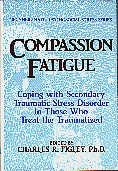
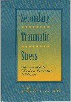

|
|
Références
|
 |
Compassion Fatigue:
Coping with Secondary Traumatic Stress Disorder in Those Who Treat the
Traumatized.
Par Charles R. Figley, Ph.D.
New York: Charles R. Figley (éditeur), 1995
Il est possible de consulter un abrégé de la table
des matières.
|

|
Secondary Traumatic Stress:
Self-Care Issues for Clinicians, Researchers, & Educators.
Par Seligman, M., Weathers, F.W., Williams, T.
Lutherville, Maryland: B. Hudnall Stamm, 1995
Il est possible de consulter un abrégé de la
table des matières.
|


Table des
matières
Compassion Fatigue:
Coping with Secondary Traumatic Stress Disorder
in Those Who Treat the Traumatized.
Par Charles R. Figley, Ph.D.
Editorial Note by the Series Editor
Acknowledgments
Contributors
Introduction
1. Compassion Fatigue as Secondary Traumatic Stress
Disorder: An Overview
Charles R. Figley
2. Survival Strategies: A Framework for
Understanding Secondary Traumatic Stress and Coping in Helpers
Paul Valent
3. Working with People in Crisis: Research
Implications
Randal D. Beaton and Shirley A. Murphy
4. Working with People with PTSD: Research
Implications
Mary Ann Dutton and Francine L. Rubinstein
5. Sensory-Based Therapy for Crisis Counselors
Chrys J. Harris
6. Debriefing and Treating Emergency Workers
Susan L. McCammon and E. Jackson Allison, Jr.
7. Treating the "Heroic Treaters"
Mary S. Cerney
8. Treating Therapists with Vicarious
Traumatization and Secondary Traumatic Stress Disorders
Laurie Anne Pearlman and Karen W. Saakvitne
9. Preventing Secondary Traumatic Stress Disorder
]anet Yassen
10. Preventing Compassion Fatigue: A Team Treatment
Model
James F. Munroe, Jonathan Sl2ay, Lisa Fisher, Christine Makary, Katlayn
Rapperport, and Rose Zimering
11. Preventing Institutional Secondary Traumatic
Stress Disorder
Don Catherall
Epilogue: The Transmission of Trauma
Name Index
Subject Index
Table des
matières
Secondary Traumatic Stress:
Self-Care Issues for Clinicians, Researchers, & Educators.
Par Seligman, M., Weathers, F.W., Williams, T.
Preface
B. Hudnall Stamm, Ph. D.
Introduction
B. Hudnall Stamm, Ph. D.
Part
One: Setting the Stage
Chapter 1
Compassion Fatigue: Toward a New Understanding of the Costs of Caring
Cbarles R. Figley, Ph.D.
Chapter 2
Secondary Exposure to Trauma and Self Reported Distress Among Therapists
Kelly R. Chrestman, Ph. D.
Chapter 3
The Risks Treating Sexual Trauma: Stress and Secondary Trauma in
Psychotherapists
Nancy Kassam-Adams, Ph.D.
Part
Two: Therapist Self Care Models
Chapter 4
Self Care for Trauma Therapists: Ameliorating Vicarious Traumatization
Laurie Anne Pearlmnan, Ph.D.
Chapter 5
Helpers' Responses to Trauma Work: Understanding and
Intervening in an Organization
Dena J. Rosenbloom, Ph. D., Anne C. Pratt, Ph. D., and Laurie Anne
Pearlman, Ph.D.
Chapcer 6
Coping with Secondary Traumatic Stress: The Importance of the
Therapist's Professional Peer Group
Don R. Catherall, Ph. D.
Part
Three: Beyond the Therapy Room
Chapter 7
Communication and Self Care: Foundational Issues
Chrys J. Harris, Ph. D. and Jon G. Linder, M. Ed
Chapter 8
Painful Pedagogy: Teaching About Trauma in Academic and Training
Settings
Susan L. McCammon, Ph. D.
Chapter 9
Trauma-Based Psychiatry for Primary Care
Lyndra J. Bills, M. D.
Chapter 10
Kelengakutelleghpat: An Artic Community-Based Approach
to Trauma
Michael J. Terry, R. N., A. N. P.
Chapter 11
Creating Virtual Community: Telemedicine and Self Care
B. Hudnall Stamm, Ph. D. and Frederick W Pearce, Ph. D.
Part
Four: Ethical Issues in Self Care
Chapter 12
Ethical Issues Associaced wich Secondary Traumain Thetapists
James F. Munroe, Ed D.
Chapter 13
Self Care and the Vulnerable Therapist
Mary Beth Williams, Ph.D. and John F Sommer Jr.
Chapter 14
No Escape from Philosophy in Trauma Treatment and Research
Jonathan Shay, M. D., Ph. D.
Chapter 15
The Germ Theory of Trauma: The Impossibility of Ethical Neutrality
Sandra L. Bloom, M.D.
Contributors
About the Sidran Foundation
 |
Tous droits réservés © 2002-2016 par Ressources en Développement inc.
Nous n'exprimons aucune opinion concernant les annonces google
Si vous voulez reproduire ou distribuer ce document, lisez
ceci
|
|
|